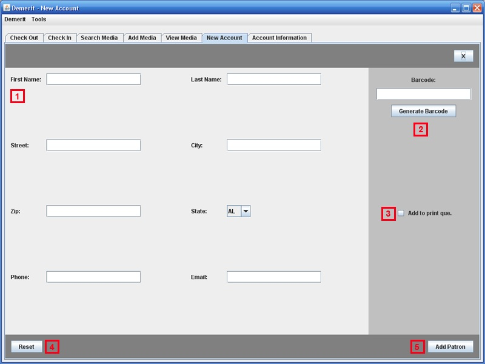

<body>

<table>
<tr>
<td>1. Enter in patron information.</td>
</tr>
<tr>
<td>2. Generate patron's barcode..</td>
</tr>
<tr>
<td>3. Add patron's barcode to the print que.</td>
</tr>
<tr>
<td>4. Clear the patron info.</td>
</tr>
<tr>
<td>5. Add the patron to the database.</td>
</tr>
</table>
</body>